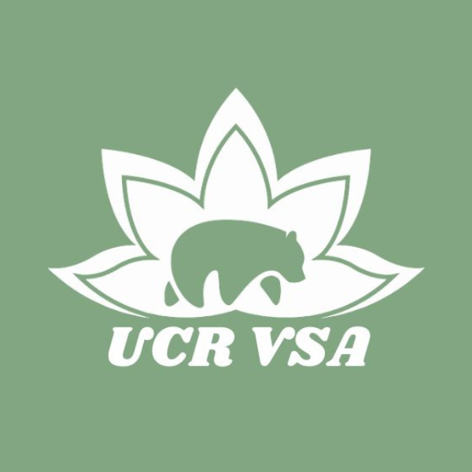
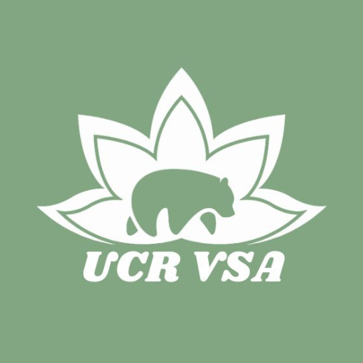
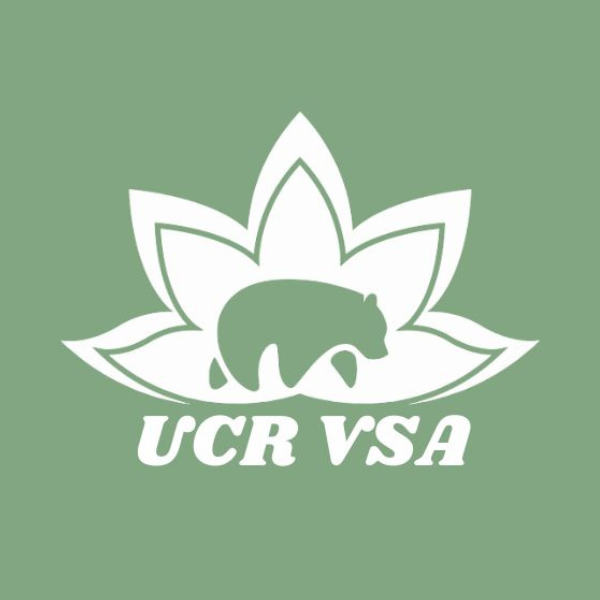

Johnpaul Nguyen
Hello, my name is Johnpaul Nguyen, and I am a dedicated and ambitious college student pursuing a degree in business with a career goal in dentistry. As a first-year student majoring in Business Administration, I am driven by a strong desire to combine my passion for business acumen with my aspiration to make a positive impact on people's oral health.
Throughout my academic journey, I have been actively involved in coursework that lays a solid foundation in business principles, including marketing, finance, and management. This multidisciplinary approach has provided me with a well-rounded understanding of how businesses operate and has sharpened my analytical and problem-solving skills. I am fascinated by the intricate intersection of business strategies and healthcare, which motivates me to explore the various avenues where these fields intersect.
While I am still in the early stages of my career path, I am dedicated to gaining practical experience that aligns with my long-term goal of becoming a dentist. I am actively exploring opportunities to shadow and volunteer in dental clinics to immerse myself in the world of dentistry, observe firsthand patient care, and gain insights into the day-to-day operations of a dental practice. These experiences will not only allow me to confirm my passion for dentistry but also provide valuable exposure to the clinical environment.
Outside of academics, I am committed to serving the community and making a difference. I have volunteered at local dental health camps, assisting in providing oral health education and basic dental care to underserved populations. These experiences have reinforced my belief in the importance of oral health and the transformative impact it can have on individuals' lives.
Looking ahead, my ultimate goal is to combine my business acumen with my passion for dentistry. I aspire to own and operate my own dental practice, where I can provide comprehensive oral care and create a positive and comfortable environment for patients. I am eager to pursue further education in dentistry after completing my undergraduate degree, and I am dedicated to the pursuit of excellence in both my academic and professional endeavors.
As I continue my journey, I am committed to expanding my knowledge, gaining hands-on experience, and nurturing my entrepreneurial spirit. I believe that by blending my business skills with my passion for dentistry, I can contribute to improving access to quality oral healthcare and making a positive impact on the well-being of individuals and communities.
Experience
Pre-Dental Society
• Club for aspiring dentists
• Helps Students Be on track for a dental career
• Connects students with the same goals and provides mentorship
Team General Manager
• Scheduled Team Practices
• Worked on Recruting New Players and Coaches
• Worked with Online Tournments
• Created a Team Environment and Worked with many individuals
Education
UC Riverside
La Quinta High School
University of California Riverside
Portfolio


 

